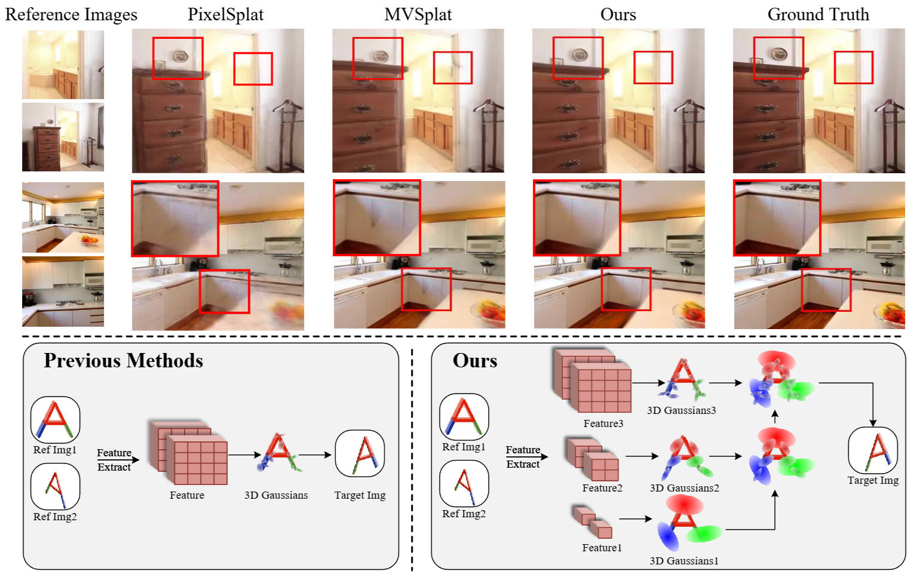
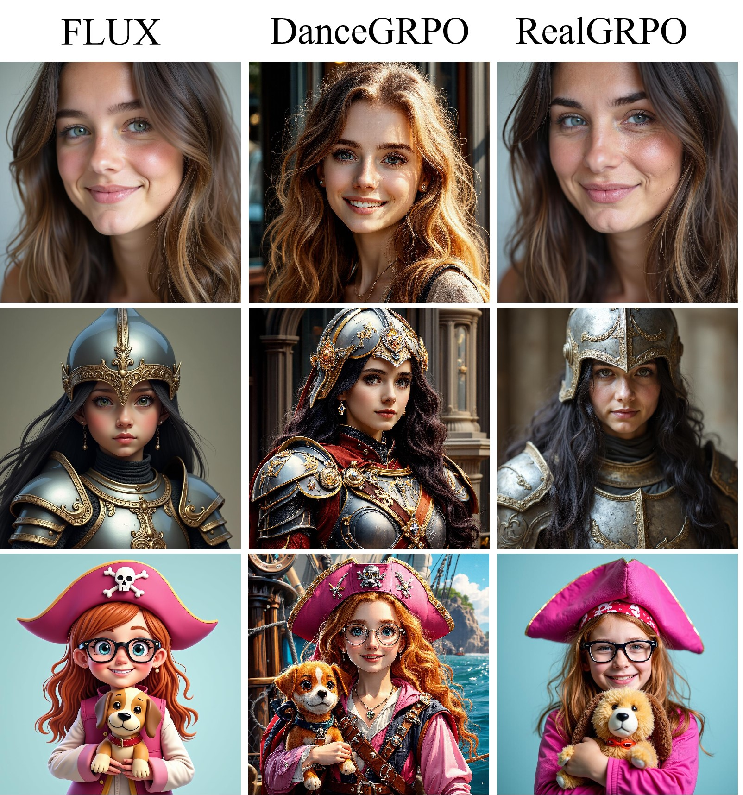

I am a 2nd-year Ph.D. student in the College of Computer Science at Fudan University, advised by Dr. Tong He. I received my Bachelor of Computer Science and Technology from Sichuan University in June 2024.
My research interests lie at the intersection of world modeling, reinforcement learning, and data-centric AI. I am broadly interested in building 4D world models for perception, reconstruction, prediction, and planning, supported by scalable multimodal data infrastructure. More recently, I have also been exploring RL-based alignment for diffusion models and large language models.
Feel free to drop an email to reach out! (discussion, collaboration, etc.)
ICLR, 2026
paper / project page / code / dataset
A multi-domain and multimodal dataset designed to support large-scale 4D world modeling across robotics, simulation, human activities, and in-the-wild scenarios.
ICLR, 2026
paper / project page / code
A geometry learning framework with permutation-equivariant design for visual reasoning and structured world understanding.
ICLR, 2026
paper / project page / code
A streaming reconstruction method that improves long-horizon scene modeling with a window-based design and camera token pooling.
ICCV, 2025. Best Paper Award, RIWM workshop.
paper / project page / code
A unified world modeling framework that incorporates geometry-aware representations for perception, prediction, and generation.
arXiv, 2025
paper / project page / code
An autoregressive video generation framework that treats 4D video synthesis as a world modeling problem.

ICLR, 2025
paper / project page / code
A hierarchical Gaussian splatting approach for robust and generalizable sparse-view 3D reconstruction.

Feb. 2026
RealGRPO addresses reward hacking in GRPO-based diffusion alignment by using an LLM to dynamically generate contrastive style pairs.